Stan na żywo, bez zgadywania
Temperatura zadana i rzeczywista, wybrana funkcja, aktywny etap, licznik czasu — odświeżane z piekarnika, nie z telefonu. Gdy piekarnik potwierdza polecenie odczytem, aplikacja zmienia status na potwierdzony.
Niezależna aplikacja na Androida z publicznym kodem
OpenOven to niezależna alternatywa dla aplikacji producenta: lokalne sterowanie kompatybilnymi piekarnikami Amica przez domowe Wi-Fi. Funkcje grzania, programy, pieczenie w etapach, własne przepisy, historia i diagnostyka — bez konta i bez serwera pośredniczącego.
Makieta interfejsu pracuje w przeglądarce — dane są generowane lokalnie, dokładnie tak jak w trybie demonstracji w samej aplikacji.
01 — Co potrafi
Aplikacja nie udaje uproszczenia. Pokazuje stan piekarnika, limity funkcji i etapy tak, jak wygląda ich realna obsługa — tylko szybciej i z jednego ekranu telefonu.
Temperatura zadana i rzeczywista, wybrana funkcja, aktywny etap, licznik czasu — odświeżane z piekarnika, nie z telefonu. Gdy piekarnik potwierdza polecenie odczytem, aplikacja zmienia status na potwierdzony.
Temperatura i czas bez przerywania programu. Dołóż minuty z poziomu pulpitu — nowe nastawy wracają do piekarnika natychmiast.
Temperaturę i czas ustawiasz przeciąganiem — jak kołami w piekarniku. Im dłuższy gest, tym szybciej przesuwa się skala.
Każdy etap ma własną funkcję, temperaturę i czas. Piekarnik przechodzi między nimi sam, aplikacja pilnuje kolejności.
Etapy, składniki, opis i zdjęcie w jednej karcie. Całość eksportujesz do pliku ZIP i importujesz na innym telefonie albo w drugą stronę.
Tryb demonstracji odpala symulator protokołu: możesz przejść całą aplikację, poznać ekrany i zachowania, nie mając urządzenia w kuchni.
Aplikacja nie pozwala wystartować wartości, których piekarnik by nie przyjął: każda funkcja ma własny zakres temperatur, a progi są sprawdzane na etapie układania etapów — nie po wysłaniu polecenia.
02 — Przewodnik po aplikacji
Przewiń, żeby przejść ścieżkę od pulpitu do parowania. Makieta po lewej reaguje na pozycję sekcji na stronie — to ten sam układ co w wersji na Androida.
Etap 01
Pierwszy ekran pokazuje to, co naprawdę wie piekarnik: temperaturę w komorze, status, ostatnie nastawy. Gdy nic się nie piecze, tym ekranem ustawiasz pieczenie — historię jednym dotknięciem.
Etap 02
Po starcie pulpit zmienia układ: pierście postępu, temperatura zadana i rzeczywista obok siebie, licznik czasu oraz bieżący etap. Sterowanie pozostaje na tym samym ekranie — bez zagłębiania się w menu.
Etap 03
Wybierasz funkcję grzania, potem przeciągasz karuzelę temperatury i czasu. Skala przyspiesza przy dłuższym geście, więc przebiegnięcie od 30 do 280 °C zajmuje ułamek sekundy, a detal dalej jest pojedynczym stopniem.
Etap 04
Własna sekwencja: najpierw termoobieg, potem zapiekanie, na końcu podawanie. Etapy układasz na karuzelach i uzupełniasz w dowolnej chwili — aplikacja pilnuje, żeby suma i progi były zgodne z limitem funkcji.
Etap 05
Okazało się, że trzeba podkręcić górę albo dołożyć kwadrans? Zmieniasz temperaturę i czas na bieżąco, a ekran pokazuje dwa stany: polecenie wysłane oraz polecenie potwierdzone odczytem z piekarnika.
Etap 06
Cztery programy fabryczne startują od razu albo trafiają na ekran nastaw do korekty. Własne przepisy prowadzą przez etapy jak instrukcja: etapy, składniki, opis i zdjęcie, a całość przenosi plik ZIP albo kod QR.
Etap 07
Parowanie idzie z panela piekarnika: licznik na wyświetlaczu, potem kod QR albo ręczne wpisanie hasła. Aplikacja potrafi też skonfigurować Wi-Fi samego piekarnika i przenieść profil na drugi telefon przez wygenerowany kod.
03 — Interakcja
Wybierz funkcję, przeciągnij karuzele temperatury i czasu, dołóż etapy. Ta część strony działa dokładnie jak ekran nastaw w aplikacji — z tymi samymi limitami i tymi samymi nazwami funkcji. Nic nie wysyłamy: wszystko zostaje w Twojej przeglądarce.
Zakres temperatur zależy od funkcji: ta obsługuje 30–280 °C.
Etap dziedziczy funkcję i temperaturę; suma czasów musi mieścić się w 600 minutach, a temperatura każdego etapu nie może przekraczać limitu funkcji.
04 — Ekrany
Poniższe obrazy pochodzą z wersji 0.5.x–0.6.0 uruchamianej na emulatorze oraz z testów na telefonie i piekarniku. Kliknij dowolny, żeby zobaczyć pełną rozdzielczość 1080 × 1920.
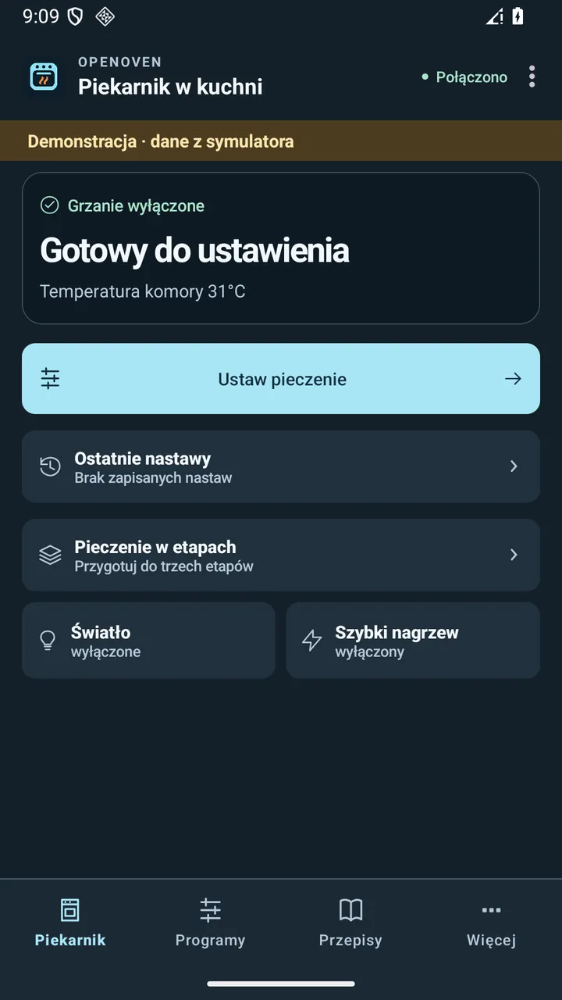
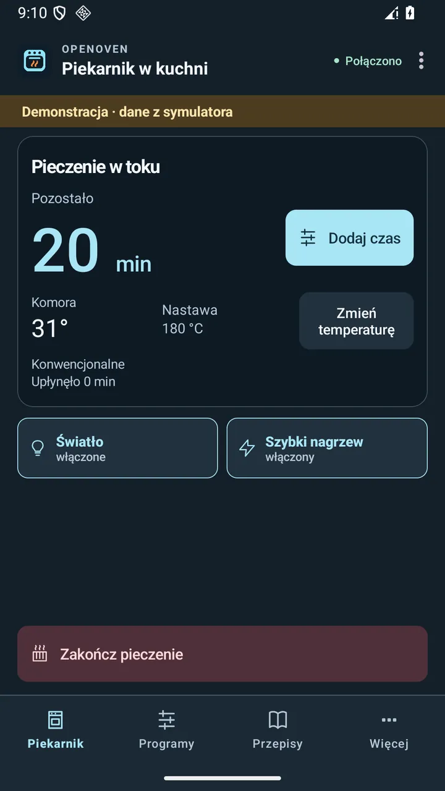
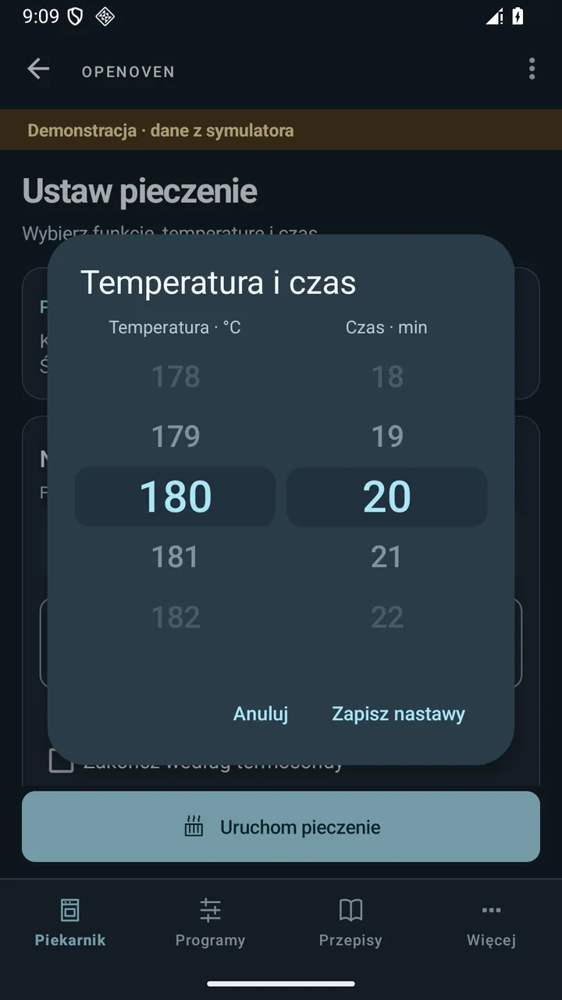
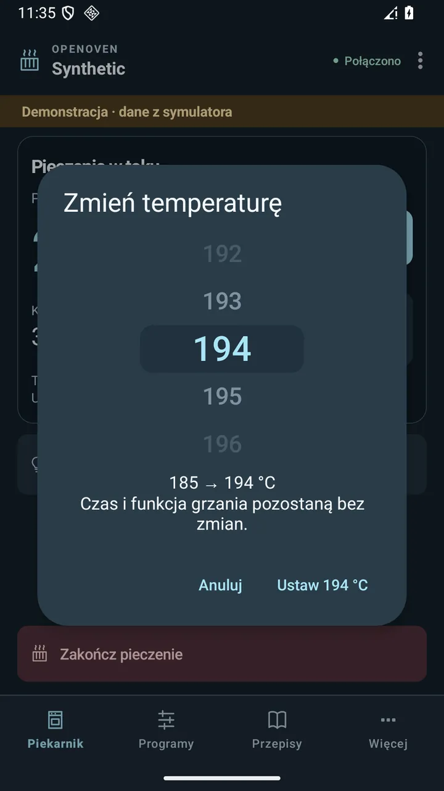
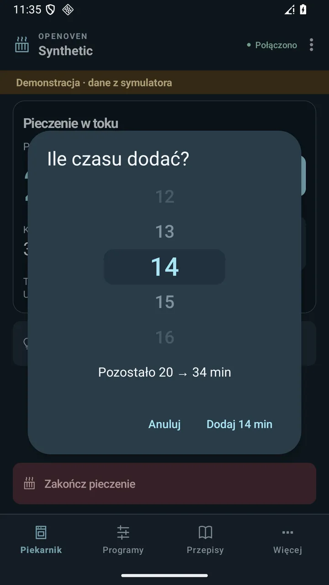
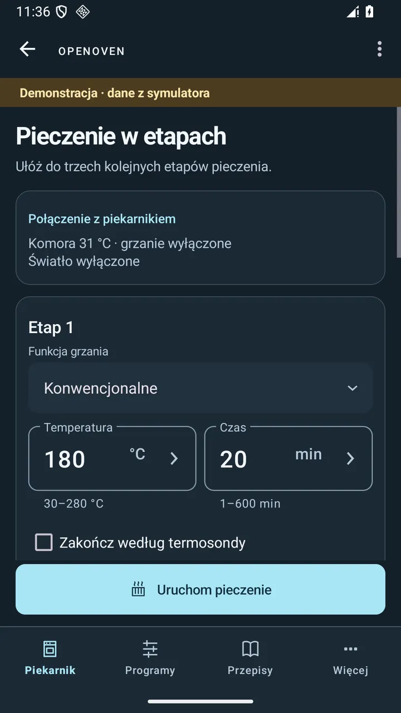
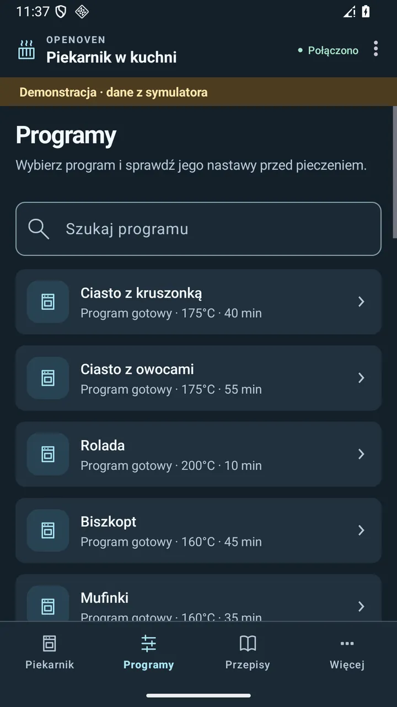
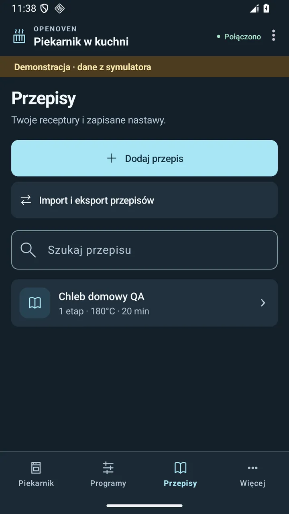
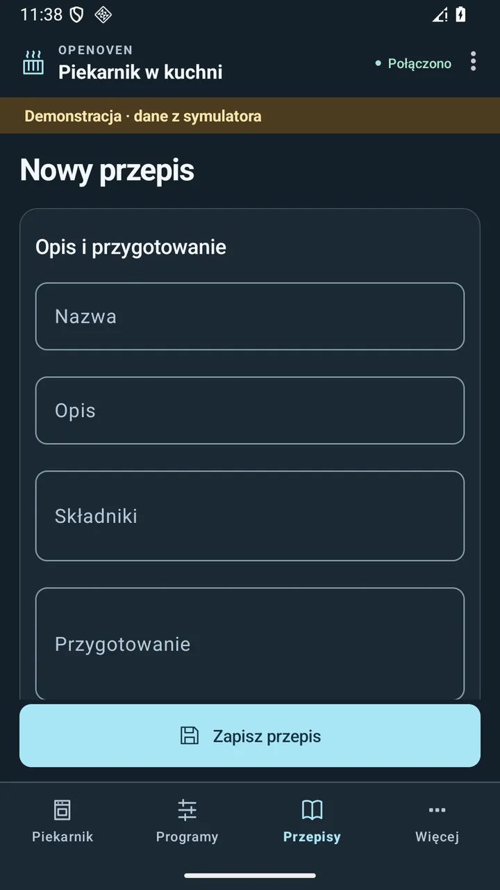
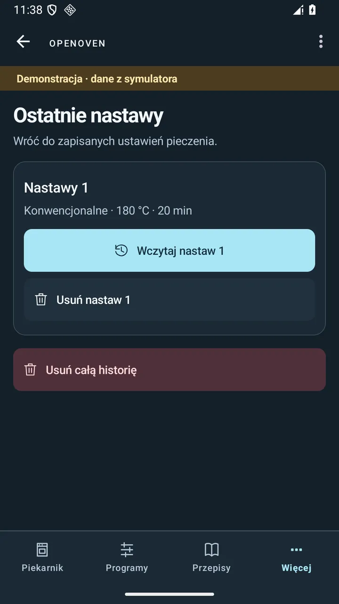
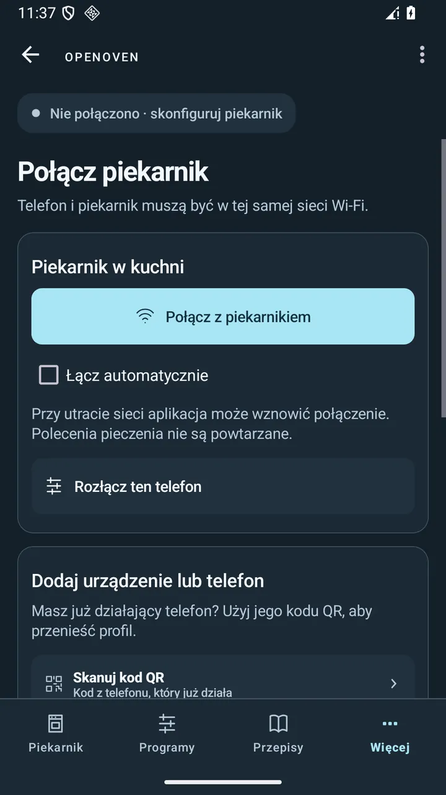
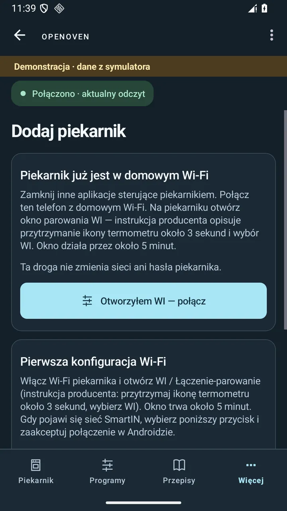
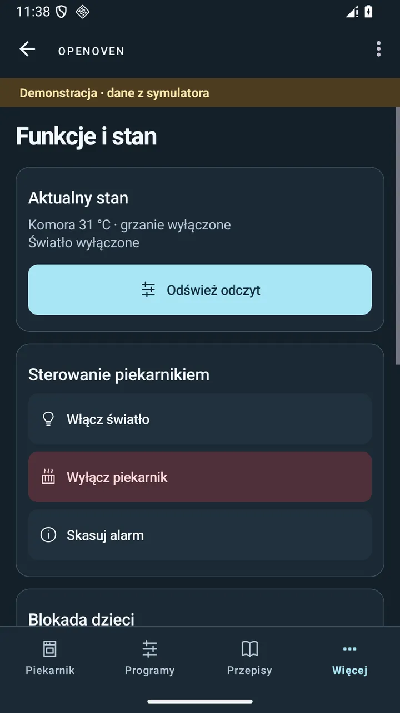
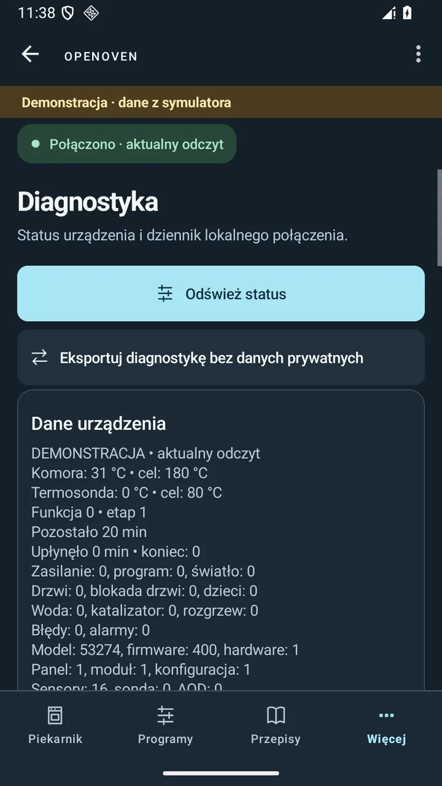
Przeciągnij palcem albo użyj klawiatury.
05 — Wygląd
Aplikacja nie narzuca motywu: wybiera się go w „Więcej → Wygląd i motyw”, a trzecia opcja podąża za ustawieniem systemowym. Ta strona zrobiła dokładnie to samo, więc możesz sprawdzić oba warianty bez instalowania czegokolwiek.
Wybór zapisuje się w tej przeglądarce — dokładnie jak w aplikacji.
Makiety po prawej i lewej korzystają z tokenów kolorów aplikacji: kontrast tekstu do tła w obu wariantach wynosi ponad 7:1 dla treści podstawowych, więc liczniki czasu i temperatury pozostają czytelne z drugiego końca kuchni.
06 — Jak to działa
Telefon łączy się z piekarnikiem bezpośrednio w domowej sieci Wi-Fi. Nie ma konta, nie ma serwera pośredniczącego, nie ma telemetrii. Jest profil zapisany w telefonie i rozmowa dwóch urządzeń w tej samej podsieci.
Ta sama sieć, dwa urządzenia
Jak powstał ten projekt
krok 01
Aplikacja producenta steruje piekarnikiem przez domowe Wi-Fi, więc interfejs można było obserwować tam, gdzie faktycznie działa: na lokalnym połączeniu z urządzeniem.
krok 02
Moduł core odpowiada za profil połączenia, składnię poleceń, odczyt stanu i symulator. Aplikacja jest tylko interfejsem — dzięki temu logikę da się przetestować bez telefonu w ręku.
krok 03
SimulatedOven odtwarza zachowanie urządzenia: stany, etapy, limity funkcji. Na nim działają testy emulatorów i tryb demonstracji w samej aplikacji.
krok 04
Ostatni krok to prawdziwe urządzenia: POCO F2 Pro i piekarnik Amica z identyfikatorem modelu 9137. Tu sprawdzano parowanie, odczyty i ponowne łączenie po zamknięciu okna.
07 — Jakość i zakres
OpenOven jest wydawany jako wersja testowa i mówi o tym wprost. Poniżej jest to, co faktycznie sprawdzono — oraz uczciwie to, czego jeszcze nie sprawdzono.
| Środowisko | Co sprawdzono | Status |
|---|---|---|
| POCO F2 Pro + piekarnik Amica (model 9137) | aktualny odczyt, dodanie w istniejącym Wi-Fi po wyczyszczeniu danych, ponowne połączenie po zamknięciu okna parowania, pełna reinstalacja | sprawdzone na urządzeniu |
| Emulator Android 14 i Android 16 | nawigacja, karuzele nastaw, zachowanie szkicu, przepisy ZIP, uprawnienia, scenariusze sterowania z symulatorem — po 34 testy na każdym | automatyczne 68/68 |
| JVM, 56 testów jednostkowych | model odczytu, etapy, zmiana czasu i temperatury, obsługa utraty sesji, kod warstwy połączenia | wszystkie przechodzą |
| Inne telefony, panele i wersje firmware | kompatybilność sprzętowa niepotwierdzona; inne panele mogą inaczej nazywać opcję okna parowania, a nowe wersje oprogramowania piekarnika mogą zmieniać zachowanie | do sprawdzenia |
| Pierwsza konfiguracja sieci na nowym piekarniku | kreator ma testy z symulatorem; próba z fizycznym urządzeniem dotyczyła już działającej sieci domowej | częściowo |
08 — Pierwsze połączenie
Ścieżka dla piekarnika, który jest już w domowym Wi-Fi. Nazwy opcji zależą od panelu — na testowanym licznik 05 oznacza otwarte okno parowania.
Podłącz telefon do domowego Wi-Fi i zamknij inne aplikacje sterujące piekarnikiem — sesja sterowania jest jedna.
telefonWi-Fi domowe
„Więcej → Połączenie z piekarnikiem → Dodaj piekarnik → Piekarnik już jest w domowym Wi-Fi”.
OpenOvendodawanie
Na panelu piekarnika włącz ŁĄCZENIE → ON i zatwierdź OK. Licznik pokazuje otwarte okno.
panel piekarnika05
Wybierz „Otworzyłem WI — połącz”. Po komunikacie „Gotowe” sprawdź aktualny odczyt na pulpicie.
odczyt180 °C · 0:41
Pobieranie
Najnowsze wydanie jest zawsze pod tym samym adresem. Plik ma 8,6 MB i podpis kluczem wydania; checksum SHA-256 publikujemy przy release.
SHA-256: 93c542e5a997164b8fcacc33ed3ffd8979d33f6c96f54e56a03a1583c3cfbc66
Zachowaj bieżącą konfigurację sieci piekarnika. Profil QR udostępniaj tylko osobom, którym chcesz dać dostęp do lokalnego sterowania.
Budowanie
Wymagane JDK 17 i Android SDK 34. Aplikacja działa od Androida 6. Poniższe polecenie odpala najpierw testy rdzenia.
git clone https://github.com/techparka/openoven.git
cd openoven
./gradlew :core:test :app:assembleDebugAPK pojawi się w app/build/outputs/apk/debug/. W Windows użyj gradlew.bat.
Wydanie
Częste pytania
Start
Zainstaluj APK 0.6.0, przejdź demonstrację na symulatorze, a potem dodaj piekarnik w czterech krokach. Kod, zgłoszenia i plan dalszych wersji są w repozytorium.
SHA-256 · 93c542e5a997164b8fcacc33ed3ffd8979d33f6c96f54e56a03a1583c3cfbc66 · wydanie testowe